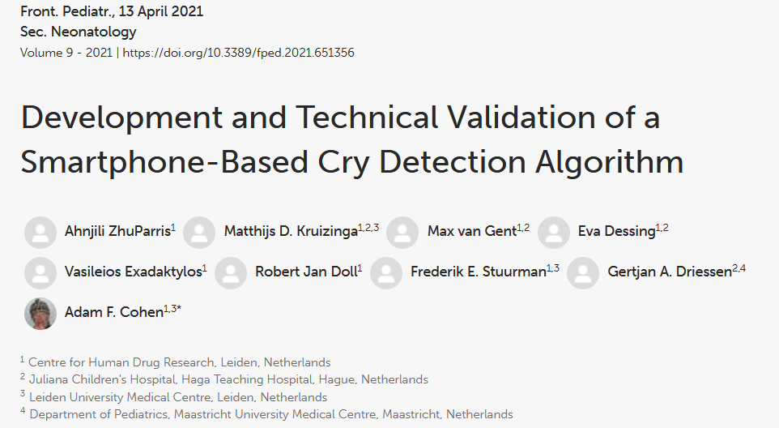
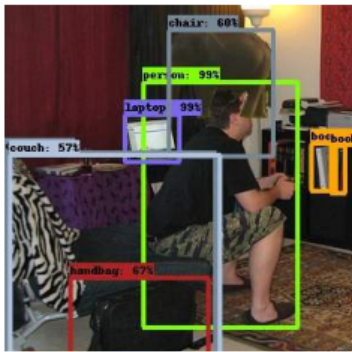
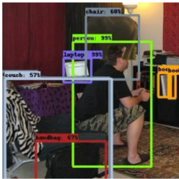

Ex-Academic
Focusing on Medical Surveillance


Focusing on Medical Surveillance


ImageNet — the dataset that powered the deep learning revolution — contained 2,832 subcategories under "person." Many were racial slurs, sexual orientations, and derogatory terms.
Every label is a simplification. When a model classifies your face as "happy" or "threatening," it is mapping your pixels onto a category that someone, somewhere, decided was meaningful.


 



The Follower, 2023–2026

* All of the media content here are deepfakes